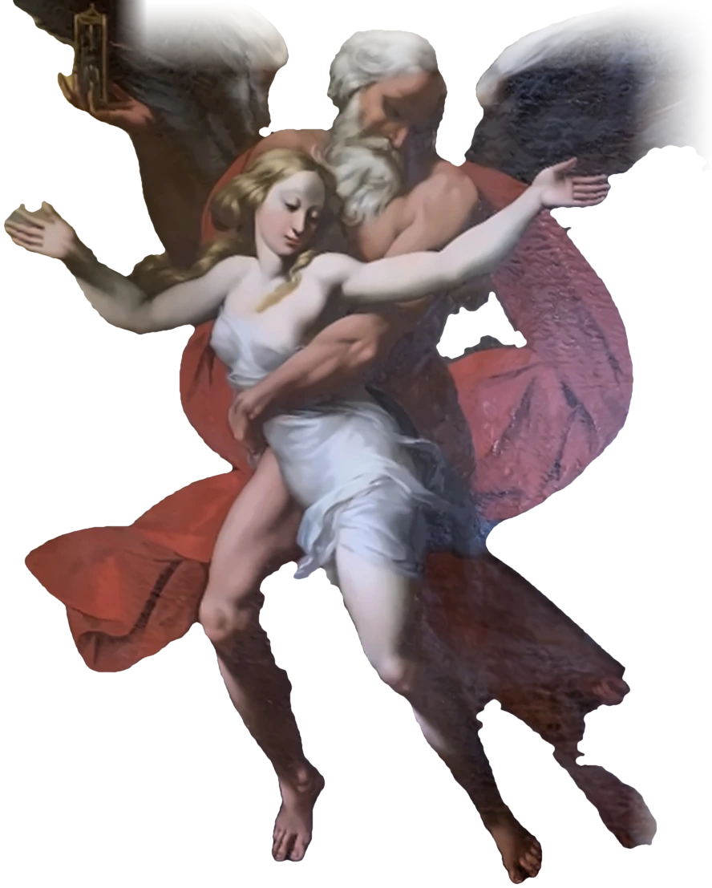
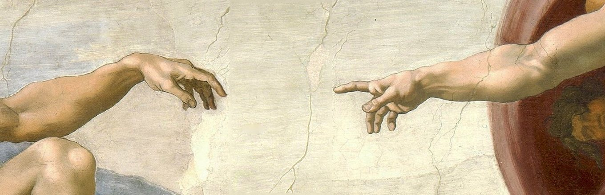
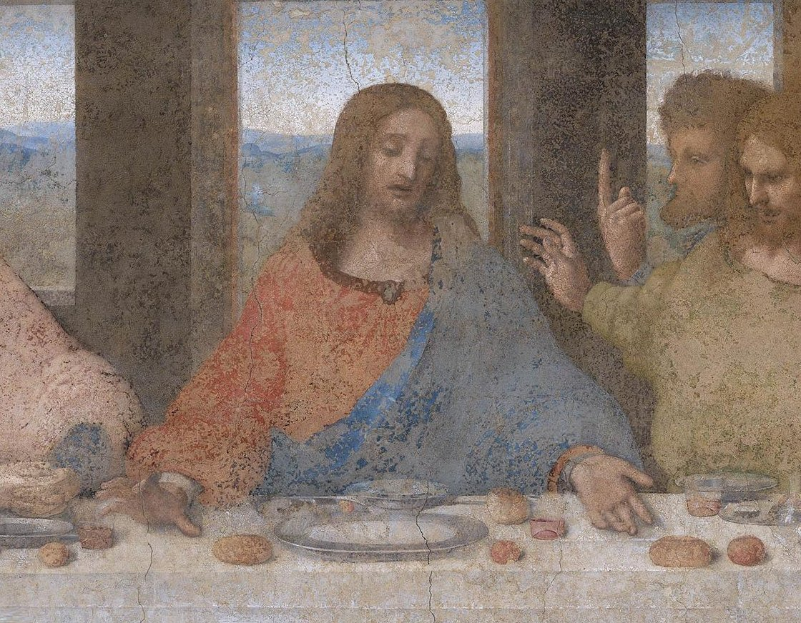

Il Cavalier d’Arpino e tutta la sua Critica ringrazia: Raffaella
ScorriPer il suo impegno e costanza nella tesi nonostante i capricci di quella rompipalle della sua relatrice.
Come ricompensa le viene gentilmente offerta un’uscita che non ha nessun altro intento che di rallegrare la promessa laureanda
Avendo visto tutto l'impegno e la fatica dedicata, vorrei che nonostante tutto tu possa presentarti alla discussione felice e orgogliosa. Mi impegnerò per farti passare qualche ora ricca di distrazioni e mi fermerò quando ti vedrò sorridere. Se non accetti l'invito, lo capirò, ma saremo in due ad essere tristi delusi e arrabbiati.
Ella ha ancora la cortese intenzione di uscire con il suo umile scriba?


Cosa gradirebbe fare?